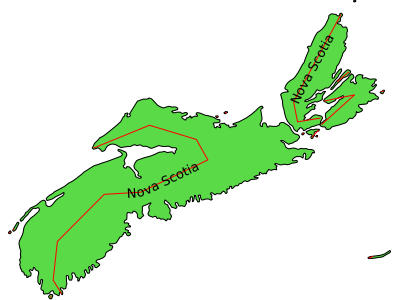

GEOMTRANSFORM - Geometry Transformations¶
- Author:
Håvard Tveite
- Author:
Jeff McKenna
- Contact:
jmckenna at gatewaygeomatics.com
- Last Updated:
2022-08-14
Geometry transformations return a new geometry. The purpose of a geometry transformation can be to achieve special effects for symbol rendering and labeling.
Geometry transformation is available at the LAYER level and the STYLE level. At the LAYER level (since MapServer 6.4), the original vector geometry (“real world” coordinates) is used. At the STYLE level (since MapServer 6.0), pixel coordinates are used.
It may be useful to apply pixel values also at the LAYER level, and that is possible. If UNITS is defined in the LAYER, the [map_cellsize] variable can be used to convert to pixel values at the LAYER level:
GEOMTRANSFORM (simplify([shape], [map_cellsize]*10))
Transformations for simple styling (CLASS STYLE only)¶
The following simple geometry transformations are available at the CLASS STYLE level:
bbox
centroid
end
start
vertices
bbox¶
GEOMTRANSFORM bbox returns the bounding box of the geometry.
GEOMTRANSFORM “bbox”

Geomtransform bbox¶
Class definitions for the example:
CLASS
STYLE
COLOR 0 0 0
WIDTH 6
END # STYLE
STYLE
GEOMTRANSFORM "bbox"
OUTLINECOLOR 255 0 0
WIDTH 1
PATTERN 1 2 END
END # STYLE
END # CLASS
centroid¶
GEOMTRANSFORM centroid returns the centroid of the geometry.
GEOMTRANSFORM “centroid”

Geomtransform centroid¶
Style definitions for the example:
STYLE
GEOMTRANSFORM "centroid"
COLOR 255 0 0
SYMBOL circlef
SIZE 5
END # STYLE
Symbol definition for the circlef symbol:
SYMBOL
NAME "circlef"
TYPE ellipse
FILLED true
POINTS
1 1
END # POINTS
END # SYMBOL
end and start¶
GEOMTRANSFORM end returns the end point of a line.
GEOMTRANSFORM start returns the start point of a line.
GEOMTRANSFORM “start”
GEOMTRANSFORM “end” (since END is used to end objects in the map file, end must be embedded in quotes)
The direction of the line at the start / end point is available for rendering effects.

Geomtransform start and end usage¶
Class definitions for the example.
Lower part of the figure:
CLASS
STYLE
GEOMTRANSFORM "start"
SYMBOL "circlef"
COLOR 255 0 0
SIZE 20
END # STYLE
STYLE
COLOR 0 0 0
WIDTH 4
END # STYLE
STYLE
GEOMTRANSFORM "end"
SYMBOL "circlef"
COLOR 0 255 0
SIZE 20
END # STYLE
END # CLASS
Upper part of the figure:
CLASS
STYLE
COLOR 0 0 0
WIDTH 4
END # STYLE
STYLE
GEOMTRANSFORM "start"
SYMBOL "startarrow"
COLOR 255 0 0
SIZE 20
ANGLE auto
END # STYLE
STYLE
GEOMTRANSFORM "start"
SYMBOL "circlef"
COLOR 0 0 255
SIZE 5
END # STYLE
STYLE
GEOMTRANSFORM "end"
SYMBOL "endarrow"
COLOR 0 255 0
SIZE 20
ANGLE auto
END # STYLE
STYLE
GEOMTRANSFORM "end"
SYMBOL "circlef"
COLOR 0 0 255
SIZE 5
END # STYLE
END # CLASS
The startarrow symbol definition (endarrow is the same, except for ANCHORPOINT (value for endarrow: 1 0.5):
SYMBOL
NAME "startarrow"
TYPE vector
FILLED true
POINTS
0 0.4
3 0.4
3 0
5 0.8
3 1.6
3 1.2
0 1.2
0 0.4
END # POINTS
ANCHORPOINT 0 0.5
END # SYMBOL
vertices¶
GEOMTRANSFORM vertices produces the set of vertices of a line (with direction information).
GEOMTRANSFORM “vertices”

Geomtransform vertices¶
Class definitions for the example:
CLASS
STYLE
COLOR 0 0 0
WIDTH 4
END # STYLE
STYLE
GEOMTRANSFORM "vertices"
SYMBOL "vertline"
COLOR 0 0 0
WIDTH 2
SIZE 20
ANGLE AUTO
END # STYLE
END # CLASS
The vertline symbol definition:
SYMBOL
NAME "vertline"
TYPE vector
POINTS
0 0
0 1
END # POINTS
END # SYMBOL
Labels (LABEL STYLE only)¶
The following simple geometry transformations are available at the LABEL STYLE level:
labelpnt
labelpoly
These are used for label styling (background colour, background shadow, background frame).
Note
The result of using labelpnt is affected by the LAYER LABELCACHE setting. If LABELCACHE is ON (the default), the label will be shifted when a non-zero sized symbol is added using labelpnt.
labelpnt and labelpoly¶
GEOMTRANSFORM labelpnt produces the geographic position the label is attached to. This corresponds to the center of the label text only if the label is in position CC.
GEOMTRANSFORM “labelpnt”
GEOMTRANSFORM labelpoly produces a polygon that covers the label plus a 1 pixel padding.
GEOMTRANSFORM “labelpoly”
These transformations can be used to make background rectangles for labels and add symbols to the label points.

Geomtransform labelpnt and labelpoly¶
Class definitions for the example:
CLASS
STYLE
OUTLINECOLOR 255 255 204
END # STYLE
LABEL
SIZE giant
POSITION UC
STYLE # shadow
GEOMTRANSFORM "labelpoly"
COLOR 153 153 153
OFFSET 3 3
END # Style
STYLE # background
GEOMTRANSFORM "labelpoly"
COLOR 204 255 204
END # Style
STYLE # outline
GEOMTRANSFORM "labelpoly"
OUTLINECOLOR 0 0 255
WIDTH 1
END # Style
STYLE
GEOMTRANSFORM "labelpnt"
SYMBOL 'circlef'
COLOR 255 0 0
SIZE 15
END # Style
END # Label
END # Class
Symbol definition for the circlef symbol:
SYMBOL
NAME "circlef"
TYPE ellipse
FILLED true
POINTS
1 1
END # POINTS
END # SYMBOL
Expressions and advanced transformations (LAYER and CLASS STYLE)¶
Combining / chaining expressions¶
A geometry transformation produces a geometry, and that geometry can be used as input to another geometry transformation. There are (at least) two ways to accomplish this. One is to combine basic geometry transformation expressions into more complex geometry transformation expressions, and another is to combine a geometry transformation expression at the LAYER level with a geometry transformation expressions or a simple geometry transformation at the CLASS STYLE level.
Combining geometry transformation expressions A geometry transformation expression contains a [shape] part. The [shape] part can be replaced by a geometry transformation expression.
For example:
GEOMTRANSFORM (simplify(buffer([shape], 20),10))
In this transformation, buffer is first applied on the geometry ([shape]). The resulting geometry is then used as input to simplify.
A style that demonstrates this:
STYLE
GEOMTRANSFORM (simplify(buffer([shape], 20),10))
OUTLINECOLOR 255 0 0
WIDTH 2
END # STYLE
The result of this transformation is shown at the top of the following figure (red line). The original polygon is shown with a full black line and the buffer with a dashed black line.
Combining expressions with simple geometry transformations Simple geometry transformations are only available for CLASS STYLE, but can be combined with geometry transformation expressions at the LAYER level.
Excerpts from a layer definitions that does this kind of combination:
LAYER
...
GEOMTRANSFORM (simplify(buffer([shape], 10),5))
CLASS
...
STYLE
GEOMTRANSFORM "vertices"
COLOR 255 102 102
SYMBOL vertline
SIZE 20
WIDTH 2
ANGLE auto
END # STYLE
END # CLASS
END # LAYER
The result of this transformation is shown at the bottom of the following figure (the red lines). The result of the LAYER level geomtransform is shown with a full black line. The original polygon is the same as the one used at the top of the figure.

Combining geomtransform expressions¶
buffer¶
GEOMTRANSFORM buffer returns the buffer of the original geometry. The result is always a polygon geometry.
GEOMTRANSFORM (buffer ([shape], buffersize))
Note
Negative values for buffersize (setback) is not supported.
Note
Buffer does not seem to work for point geometries.

Geomtransform buffer¶
Some class definitions for the example.
Lower part (polygon with buffers):
CLASS
STYLE
OUTLINECOLOR 0 255 0
GEOMTRANSFORM (buffer([shape], 20))
WIDTH 1
END # STYLE
STYLE
OUTLINECOLOR 0 0 255
GEOMTRANSFORM (buffer([shape], 10)) #
WIDTH 1
END # STYLE
STYLE
COLOR 255 0 0
GEOMTRANSFORM (buffer([shape], 5)) #
END # STYLE
STYLE
COLOR 0 0 0
END # STYLE
END # CLASS
Upper right part (layer level geomtransform):
LAYER # line buffer layer
STATUS DEFAULT
TYPE LINE
FEATURE
POINTS
80 70
80 75
END # Points
END # Feature
GEOMTRANSFORM (buffer([shape], 10))
CLASS
STYLE
COLOR 0 0 255
END # STYLE
END # CLASS
END # LAYER
centerline¶
New in version 8.0: centerline()
(centerline([shape]): Useful for labeling polygons, creates a centered line ([shape]) using a Voronoi diagram generated by GEOS and then additional simplification. Requires GEOS >= 3.5 Centerlines can only be computed for polygon shapes.
an example showing a generated red centerline that is used to label lakes, from a polygon datasource lakes.db (and uses densify() to add more verticies to the generated red line, so it follows the lake’s shape) :
LAYER NAME "red-line" TYPE LINE CONNECTIONTYPE OGR CONNECTION "lakes.db" DATA "lakes" GEOMTRANSFORM (centerline(densify([shape], 0.1))) ... CLASS NAME "red" STYLE COLOR 255 0 0 END #style LABEL COLOR 0 0 0 FONT sans TYPE truetype SIZE 7 POSITION cc FORCE TRUE ANGLE FOLLOW END #label END #class ... END #layer

densify¶
New in version 8.0: densify()
(densify([shape],tolerance): Add more verticies to the feature ([shape]). Requires a positive tolerance value. Might be useful in combination with centerline() to add more verticies to the generated labeled line.
generalize ([shape], tolerance)¶
GEOMTRANSFORM generalize simplifies a geometry ([shape]) in a way comparable to FME’s ThinNoPoint algorithm. See http://trac.osgeo.org/gdal/ticket/966 for more information.
GEOMTRANSFORM (generalize([shape], tolerance))
tolerance is mandatory, and is a specification of the maximum deviation allowed for the generalized line compared to the original line. A higher value for tolerance will give a more generalised / simplified line.
Note
Depends on GEOS.
The figure below shows the result of applying generalize at the STYLE level with increasing values for tolerance (10 - green, 20 - blue and 40 - red).

Geomtransform generalize¶
One of the STYLE definitions for the example (tolerance 40):
STYLE
GEOMTRANSFORM (generalize([shape], 40))
COLOR 255 0 0
WIDTH 1
PATTERN 3 3 END
END # STYLE
inner¶
New in version 8.0: inner()
(inner([shape]): creates an inner corresponding ring from an input polygon, as a new [shape]
simplify([shape], tolerance)¶
GEOMTRANSFORM simplify simplifies a geometry ([shape]) using the standard Douglas-Peucker algorithm.
GEOMTRANSFORM (simplify([shape], tolerance))
tolerance is mandatory, and is a specification of the maximum deviation allowed for the generalized line compared to the original line. A higher value for tolerance will give a more generalised / simplified line.
The figure below shows the result of applying simplify at the STYLE level with increasing values for tolerance (10 - green, 20 - blue and 40 - red).

Geomtransform simplify¶
One of the STYLE definitions for the example (tolerance 40):
STYLE
GEOMTRANSFORM (simplify([shape], 40))
COLOR 255 0 0
WIDTH 1
PATTERN 3 3 END
END # STYLE
an example showing a generated red centerline that is used to label a province, from a polygon datasource ns.db (and uses simplify() to reduce the verticies in the generated line) :
LAYER NAME "red-line" TYPE LINE STATUS ON CONNECTIONTYPE OGR CONNECTION "ns.db" DATA "ns" ... GEOMTRANSFORM (simplify((centerline([shape])), 10000)) CLASS NAME "red" STYLE COLOR 255 0 0 END #style LABEL COLOR 0 0 0 FONT sans TYPE truetype SIZE 10 POSITION AUTO MINFEATURESIZE AUTO ANGLE FOLLOW END #label END #class ... END #layer
simplifypt([shape], tolerance)¶
GEOMTRANSFORM simplifypt simplifies a geometry ([shape]), ensuring that the result is a valid geometry having the same dimension and number of components as the input. tolerance must be non-negative.
GEOMTRANSFORM (simplifypt([shape], tolerance))
tolerance is mandatory, and is a specification of the maximum deviation allowed for the generalized line compared to the original line. A higher value for tolerance will give a more generalised / simplified line.
The figure below shows the result of applying simplifypt at the STYLE level with increasing values for tolerance (10 - green, 20 - blue and 40 - red).

Geomtransform simplifypt¶
One of the STYLE definitions for the example (tolerance 40):
STYLE
GEOMTRANSFORM (simplifypt([shape], 40))
COLOR 255 0 0
WIDTH 1
PATTERN 3 3 END
END # STYLE
smoothsia ( [shape], smoothing_size, smoothing_iterations, preprocessing )¶
GEOMTRANSFORM smoothsia returns a smoothed version of a line.
GEOMTRANSFORM (smoothsia ( [shape], smoothing_size, smoothing_iterations, preprocessing ))
The following parameters are used:
shape (mandatory). Specify the geometry to be used
smoothing_size (optional). The window size (number of points) used by the algorithm. The default is 3.
smoothing_iterations (optional). The number of iterations of the algorithm. The default is 1.
preprocessing (optional). Preprocessing method to add more vertices to the geometry prior to smoothing, described below. There are two possible preprocessing methods:
all Adds two intermediate vertices on each side of each original vertex. This is useful to preserve the general shape of the line with low resolution data.
angle Add vertices at some specific places based on angle detection.
Example of a simple layer definition:
LAYER NAME "my_layer"
TYPE LINE
STATUS DEFAULT
DATA roads.shp
GEOMTRANSFORM (smoothsia([shape], 3, 1, 'angle'))
CLASS
STYLE
WIDTH 2
COLOR 255 0 0
END
END
Here are some examples showing results with different parameter values.

Original geometry (left) and smoothsia with default parameters (right)¶

Smoothsia - Larger window size (left) and larger window size with more iterations (right)¶
Tuning the behaviour of smoothsia¶
smoothsia has several parameters that can be used to tune its behaviour. The following sections describe some cases / possibilities.
Dataset resolution is too high¶
If you are trying to smooth a line that has a very high resolution (high density of vertices at the current view scale), you may not get the expected result because the vertices are too dense for the smoothing window size. In this case you might want to simplify the geometries before the smoothing. You can combine smoothing and simplification in a single geomtransform for that:
GEOMTRANSFORM (smoothsia(simplifypt([shape], 10)))
See RFC 89: Layer Geomtransform for more info. Here’s a visualization of the issue:

High resolution geometry, smoothing and simplification¶
Dataset resolution is too low¶
If you are trying to smooth a long line that has a low density of vertices, you may not get the expected result in some situations. You may lose some important parts of the geometry during the smoothing, for instance around acute angles. You can improve the result by enabling a preprocessing step to add intermediate vertices along the line prior to smoothing.
This behavior is controlled using the all value in the preprocessing argument of the smoothsia geomtransform:
GEOMTRANSFORM (smoothsia([shape], 3, 1, 'all'))
This preprocessing will be performed before the smoothing. It adds 2 intermediate vertices on each side of each original vertex. This is useful if we really need to preserve the general shape of the low resolution line. Note that this might have an impact on the rendering since there will be more vertices in the output.
Here’s a visualization of the issue:

Effects of normal smoothing and preprocessing¶
Curves¶
The preprocessing step might not be appropriate for all cases since it can impact the smoothing result significantly. However, without it, you might notice bad smoothing for curved lines with large distances between the line vertices. See this example:

Effects of normal smoothing (without preprocessing)¶
You can improve that by enabling another type of preprocessing: angle. This one will add points at some specific places based on angle detection to recognize the curves. Here’s how you can enable it:
GEOMTRANSFORM (smoothsia([shape], 3, 1, 'angle'))

The use of angle with smoothsia¶
outer¶
New in version 8.0: outer()
(outer([shape]): creates an outer corresponding ring from an input polygon, as a new [shape]. This might be useful when you want to ignore islands when labeling a lake.
Javascript transformation¶
- Author:
Alan Boudreault
- Contact:
aboudreault at mapgears.com
- Last Updated:
2013-12-16
Introduction¶
Using GEOMTRANSFORM this way makes it possible to modify the geometry programmatically in addition to the built-in geomtransform functions.
Usage¶
Simply declare the javascript plugin this way:
MAP
...
LAYER
...
GEOMTRANSFORM "javascript://transform.js" # relative path
CLASS
END
END
END
The path can also be absolute.
MAP
...
LAYER
...
GEOMTRANSFORM "javascript:///home/user/transform.js" # absolute path
CLASS
END
END
END
The javascript plugin has to implement a function named geomtransform that will be automatically called. This function has to return a new shape. Note that only the geometry of this new shape will be used, so your original shape attributes will be preserved.
Access to the feature attributes is made through the shape.attributes javascript object.
The following javascript functions are available:
- alert(str1, str2, …, str)
print some text in MapServer logs
- print(str1, str2, …, str)
print some text in MapServer logs
- require(path_to_lib1, path_to_lib2, …, path_to_lib)
include one or more javascript lib
Example 1. Simple Geomtransform¶
This example does a simple vertical translation …
function geomtransform() {
new_shape = new shapeObj();
new_shape.add(new lineObj());
new_point = new pointObj();
new_point.x = shape.line(0).point(0).x;
new_point.y = shape.line(0).point(0).y+30000;
new_shape.line(0).add(new_point);
return new_shape;
}
Example 2. Printing logs in MapServer logs¶
Extends example 1 by printing information to the MapServer log.
MAP
...
CONFIG "MS_ERRORFILE" "/tmp/mapserver.log"
DEBUG 1
LAYER
...
GEOMTRANSFORM "javascript://transform.js"
...
END
END
function geomtransform() {
new_shape = new shapeObj();
new_shape.add(new lineObj());
new_point = new pointObj();
new_point.x = shape.line(0).point(0).x;
new_point.y = shape.line(0).point(0).y+30000;
print('Modified y value from: ' + shape.line(0).point(0).y + ' to: '+new_point.y);
new_shape.line(0).add(new_point);
return new_shape;
}
Basic API¶
A minimal API is currently available to create a new shape.
pointObj¶
Constructor¶
new pointObj()
Members¶
Type |
Name |
Note |
|---|---|---|
double |
x |
|
double |
y |
|
double |
z |
|
double |
m |
Methods¶
- void setXY(double x, double y[, double m])
Set the x,y[,m] values.
- void setXYZ(double x, double y, double Z[, double m])
Set the x,y,z[,m] values.
lineObj¶
Constructor¶
new lineObj()
Members¶
Type |
Name |
Note |
|---|---|---|
int |
numpoints |
read-only |
Methods¶
- pointObj point(int index)
Returns the point at the index position.
- void add(pointObj point)
Add a point to the line.
- void addXY(double x, double y[, double m])
Add point to the line from an x,y[,m] values.
- void addXYZ(double x, double y, double Z[, double m])
Add point to the line from an x,y,z[,m] values.
shapeObj¶
Constructor¶
new shapeObj(int type)
‘type’ is one of shapeObj.Point, shapeObj.Line, shapeObj.Polygon or shapeObj.Null
Members¶
Type |
Name |
Note |
|---|---|---|
int |
numvalues |
read-only |
int |
numlines |
read-only |
int |
index |
read-only |
int |
type |
read-only |
int |
tileindex |
read-only |
int |
classindex |
read-only |
text |
text |
|
object |
attributes |
Methods¶
- shapeObj clone()
Returns a clone of the shape.
- lineObj line(int index)
Returns the line at the index position.
- void add(lineObj line)
Add a line to the shape.
- void setGeometry(shapeObj shape)
Replace the geometry of the object with the shape geometry.